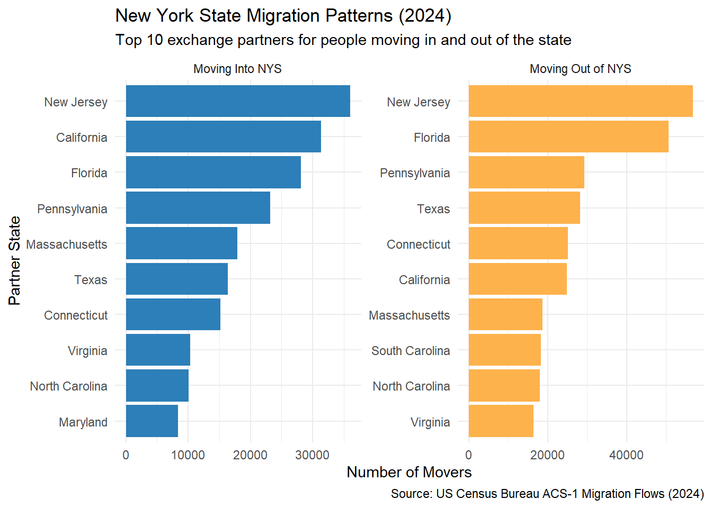
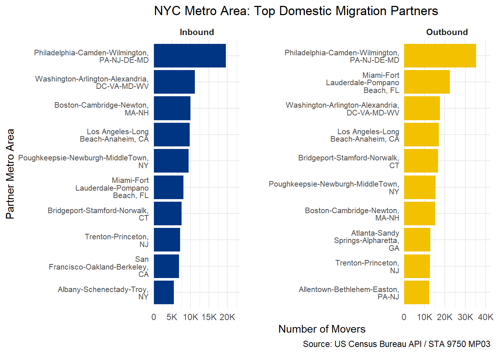
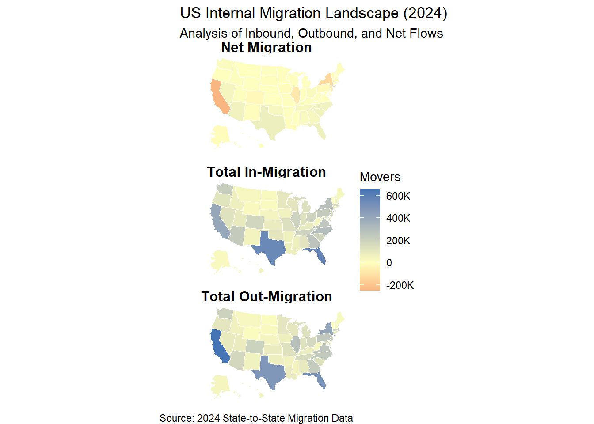
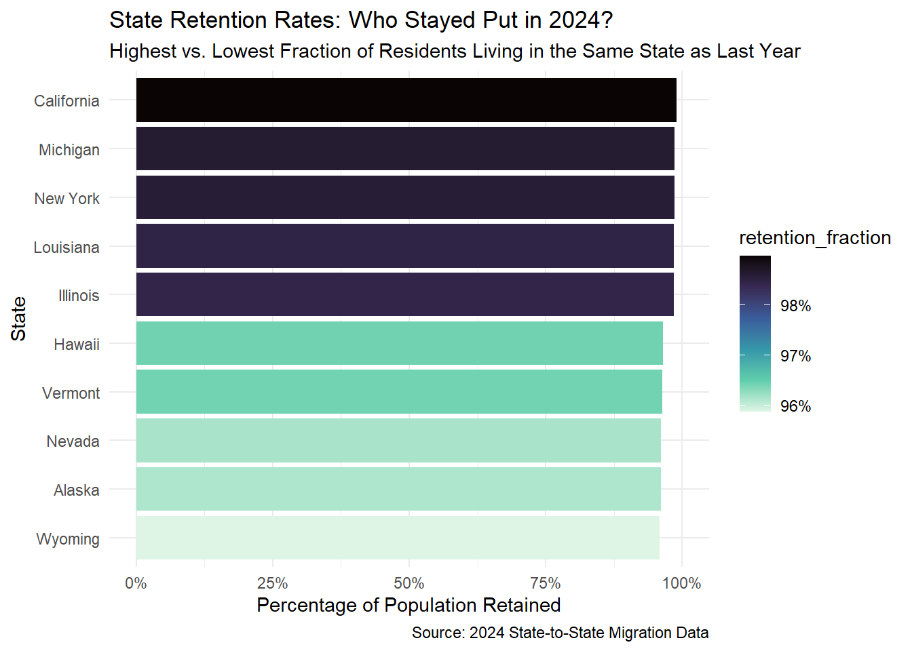
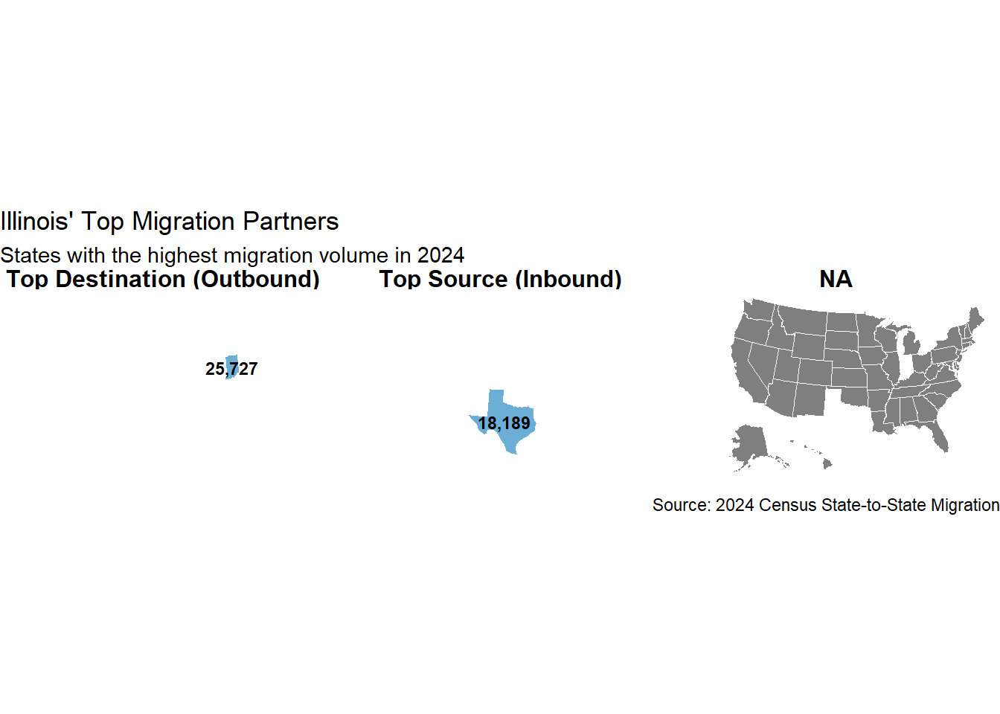
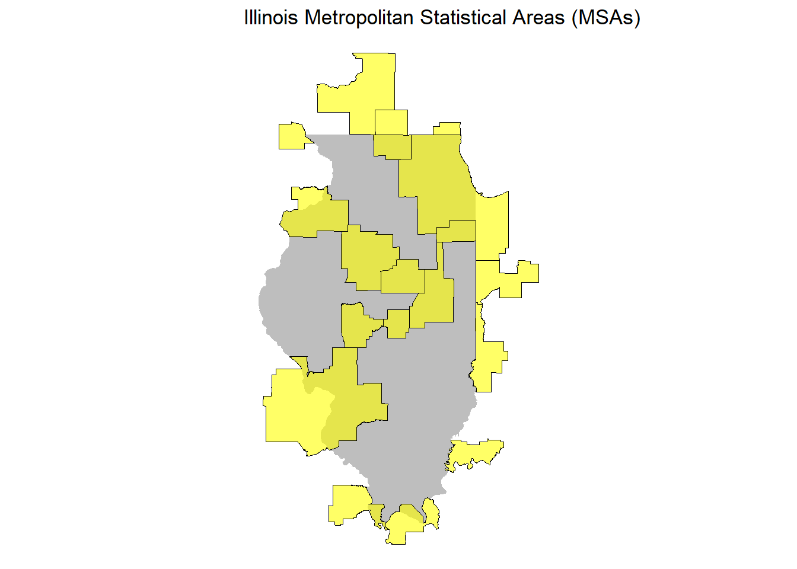
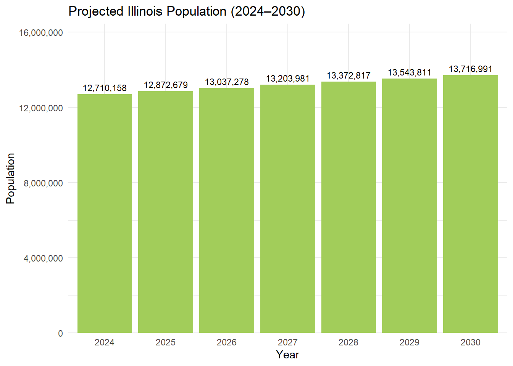

Mini-Project 03 - Who Goes There? US Internal Migration and Implications for Congressional Reapportionment
Author
anapau-tapia
Introduction
The next mini-project focuses on internal migration within the 50 states of U.S. and the District of Colombia, from 2015 to 2024. By collecting state-level and metro areas population data, I will identify historical trends in population movement, specifically highlighting states with the highest rates of in-migration and out-migration over this ten-year period.
The analysis serves to demonstrate my proficiency in data acquisition—including API usage and file parsing—using official Census Bureau migration flows.
Data Acquisition and Preparation
Code
#Task 1: State Population and Birth Information: library(tidycensus)
Warning: package 'tidycensus' was built under R version 4.5.3
Code
library(tidyverse)
── Attaching core tidyverse packages ──────────────────────── tidyverse 2.0.0 ──
✔ dplyr 1.2.0 ✔ readr 2.1.6
✔ forcats 1.0.1 ✔ stringr 1.6.0
✔ ggplot2 4.0.2 ✔ tibble 3.3.1
✔ lubridate 1.9.5 ✔ tidyr 1.3.2
✔ purrr 1.2.1
── Conflicts ────────────────────────────────────────── tidyverse_conflicts() ──
✖ dplyr::filter() masks stats::filter()
✖ dplyr::lag() masks stats::lag()
ℹ Use the conflicted package (<http://conflicted.r-lib.org/>) to force all conflicts to become errors
Code
library(readxl)
Warning: package 'readxl' was built under R version 4.5.3
Code
library(stringr)library(httr2)library(jsonlite)
Attaching package: 'jsonlite'
The following object is masked from 'package:purrr':
flatten
Code
library(dplyr)library(gt)# Set tigris cache to TRUE to avoid re-downloading shapefilesoptions(tigris_use_cache =TRUE)years <-2015:2024state_pop_data <-map_dfr(years, function(yr) {if(yr ==2020) return(NULL)get_acs(geography ="state",variables =c(total_pop ="B01003_001"),year = yr,survey ="acs1",geometry =TRUE, cache_table =TRUE ) |>mutate(Year = yr)})
Getting data from the 2015 1-year ACS
The 1-year ACS provides data for geographies with populations of 65,000 and greater.
Warning: • You have not set a Census API key. Users without a key are limited to 500
queries per day and may experience performance limitations.
ℹ For best results, get a Census API key at
http://api.census.gov/data/key_signup.html and then supply the key to the
`census_api_key()` function to use it throughout your tidycensus session.
This warning is displayed once per session.
Getting data from the 2016 1-year ACS
The 1-year ACS provides data for geographies with populations of 65,000 and greater.
Getting data from the 2017 1-year ACS
The 1-year ACS provides data for geographies with populations of 65,000 and greater.
Getting data from the 2018 1-year ACS
The 1-year ACS provides data for geographies with populations of 65,000 and greater.
Getting data from the 2019 1-year ACS
The 1-year ACS provides data for geographies with populations of 65,000 and greater.
Getting data from the 2021 1-year ACS
The 1-year ACS provides data for geographies with populations of 65,000 and greater.
Getting data from the 2022 1-year ACS
The 1-year ACS provides data for geographies with populations of 65,000 and greater.
Getting data from the 2023 1-year ACS
The 1-year ACS provides data for geographies with populations of 65,000 and greater.
Getting data from the 2024 1-year ACS
The 1-year ACS provides data for geographies with populations of 65,000 and greater.
Code
state_populations <- state_pop_data |>select(NAME, estimate, year = Year) # This renames 'Year' to 'year'
#Task 5: Metro-to-Metro Migration Flows#| echo: false#| message: false#| warning: false#| results: "hide"metro_to_metro_migration <-function() { data_dir <-"data/mp03"if (!dir.exists(data_dir)) dir.create(data_dir, recursive =TRUE) api_url <-"https://api.census.gov/data/2020/acs/flows?get=MOVEDIN,MOVEDOUT,FULL1_NAME,FULL2_NAME&for=metropolitan%20statistical%20area/micropolitan%20statistical%20area:*" dest_file <-file.path(data_dir, "metro-to-metro-migration.json")if (!file.exists(dest_file)) {message("Fetching Metro Data from Census API...")request(api_url) |>req_perform() |>resp_body_string() |>writeLines(dest_file) } raw_json <-read_json(dest_file, simplifyVector =TRUE)# Convert matrix to data frame and set headers from the first row metro_raw <-as.data.frame(raw_json[-1, ], stringsAsFactors =FALSE)colnames(metro_raw) <- raw_json[1, ]# Tidy the Data metro_clean <- metro_raw |>as_tibble() |>rename(metro_current = FULL1_NAME,metro_1y = FULL2_NAME,moved_in = MOVEDIN,moved_out = MOVEDOUT) |>mutate(across(c(moved_in, moved_out), as.integer)) |>select(metro_current, metro_1y, moved_in, moved_out) |>filter(!is.na(metro_current), !is.na(metro_1y))return(metro_clean)}metro_migration <-metro_to_metro_migration()metro_migration <- metro_migration |>filter(str_detect(metro_1y, "Metro Area$|Micro Area$")) |>filter(!str_detect(metro_1y, "Outside Metro Area"))
Code
# State's abbreviation pull_state_from_metro <-function(metro_name){str_extract(metro_name, ".*, (\\S{2})[-[:alpha:]]* Metro Area", group=1)}example_metros <-c("Los Angeles-Long Beach-Anaheim, CA Metro Area", "Dallas-Fort Worth-Arlington, TX Metro Area", "Riverside-San Bernardino-Ontario, CA Metro Area", "Atlanta-Sandy Springs-Alpharetta, GA Metro Area","Chicago-Naperville-Elgin, IL-IN-WI Metro Area", "New York-Newark-Jersey City, NY-NJ-PA Metro Area", "Outside Metro Area within U.S. or Puerto Rico", "Houston-The Woodlands-Sugar Land, TX Metro Area", "Washington-Arlington-Alexandria, DC-VA-MD-WV Metro Area", "San Jose-Sunnyvale-Santa Clara, CA Metro Area")data.frame(metro = example_metros) |>mutate(metro_state =pull_state_from_metro(metro)) |>gt(id="tbl_metro_states") |>cols_label(metro="Metropolitan Statistical Area", metro_state="Primary State")
Metropolitan Statistical Area
Primary State
Los Angeles-Long Beach-Anaheim, CA Metro Area
CA
Dallas-Fort Worth-Arlington, TX Metro Area
TX
Riverside-San Bernardino-Ontario, CA Metro Area
CA
Atlanta-Sandy Springs-Alpharetta, GA Metro Area
GA
Chicago-Naperville-Elgin, IL-IN-WI Metro Area
IL
New York-Newark-Jersey City, NY-NJ-PA Metro Area
NY
Outside Metro Area within U.S. or Puerto Rico
NA
Houston-The Woodlands-Sugar Land, TX Metro Area
TX
Washington-Arlington-Alexandria, DC-VA-MD-WV Metro Area
DC
San Jose-Sunnyvale-Santa Clara, CA Metro Area
CA
From this point forward, all graphics, tables, and diagrams will use state abbreviations as defined in this table. For major cities with high migration rates, data has been aggregated at the state level. Since the scope of this project focuses on states rather than individual cities, these cases reflect the total combined data for each state.
Exploratory Analysis
Task 6: 1- Which states have had the highest net population growth rates over the past decade? To answer this question, I generated two distinct tables. Since the latest available data is from 2024 and the Census Bureau provides information in five-year (ACS-5) windows, I created one table for the initial period (2016–2020) and a second table with the most recent available years (2021–2024) to analyze net growth. NOTE: we use Total Net Migration as our primary metric
A comparison of these tables reveals that Florida and Texas have remained the primary hubs for migration over the last decade, with in-migration more than doubling for both states since 2020. Furthermore, the data strongly suggests that post-2020 migration has shifted significantly toward ‘Sunbelt’ and ‘Mountain West’ states, causing shifts in the Top 10 rankings for several other states.
Code
#QUESTION 1 - PART 1metro_summary_gt <- metro_migration |>mutate(principal_state =str_extract(metro_current, "(?<=, )[A-Z]{2}")) |>group_by(principal_state) |>summarize(Metros_Count =n_distinct(metro_current),Total_In =sum(moved_in, na.rm =TRUE),Total_Out =sum(moved_out, na.rm =TRUE),Net_Migration = Total_In - Total_Out ) |>filter(!is.na(principal_state)) |>arrange(desc(Net_Migration)) |>head(10)metro_summary_gt |>gt() |>tab_header(title ="Top 10 States by Metro Net Migration (2016-2020)",subtitle ="Based on 2020 ACS 5-Year Flow Data" ) |>cols_label(principal_state ="State",Metros_Count ="Number of Metros",Total_In ="Total Inbound",Total_Out ="Total Outbound",Net_Migration ="Net Growth" ) |>fmt_number(columns =c(Total_In, Total_Out, Net_Migration),decimals =0,use_seps =TRUE ) |>tab_style(style =list(cell_fill(color ="lightgray", alpha =0.5),cell_text(weight ="bold") ),locations =cells_body(columns = Net_Migration) ) |>tab_source_note(source_note ="Table 1 Source: U.S. Census Bureau ACS Migration Flows" )
Top 10 States by Metro Net Migration (2016-2020)
Based on 2020 ACS 5-Year Flow Data
State
Number of Metros
Total Inbound
Total Outbound
Net Growth
FL
22
920,883
763,157
157,726
TX
25
860,388
764,320
96,068
AZ
7
302,127
216,467
85,660
NC
15
432,166
363,775
68,391
WA
11
265,422
228,359
37,063
NV
3
118,565
81,742
36,823
CO
7
281,130
244,692
36,438
GA
14
333,241
300,108
33,133
SC
8
183,925
150,957
32,968
VA
9
209,096
180,189
28,907
Table 1 Source: U.S. Census Bureau ACS Migration Flows
Code
#QUESTION 1 - PART 2metro_data_raw <-get_estimates(geography ="metropolitan statistical area/micropolitan statistical area",variables ="NETMIG", year =2023) |>rename(metro_current = NAME, net_move = value)
Warning: For post-2020 Census estimates, `get_estimates()` now uses the `vintage` argument to specify the PEP vintage, and the `year` argument to isolate a year within that vintage.
! This may be a breaking change in your code
! Omitting `vintage` may lead to incorrect or unexpected results.
Using the Vintage 2024 Population Estimates
Code
# Summarize Internal Migration by Primary State state_summary_internal <- metro_data_raw |>mutate(principal_state =str_extract(metro_current, "(?<=, )[A-Z]{2}")) |>group_by(principal_state) |>summarize(Metros_Count =n_distinct(metro_current),Internal_Net_Growth =sum(net_move, na.rm =TRUE) ) |>filter(!is.na(principal_state)) |>arrange(desc(Internal_Net_Growth)) |>head(10)# Create the GT Tablestate_summary_internal |>gt() |>tab_header(title =md("Top 10 States by Metro Net Migration (2021-2024)"),subtitle ="Based on 2023 Census Vintages" ) |>cols_label(principal_state ="State",Metros_Count ="Number of Metros",Internal_Net_Growth ="Net Growth" ) |>fmt_number(columns = Internal_Net_Growth,decimals =0,use_seps =TRUE ) |>tab_style(style =list(cell_fill(color ="lightgray", alpha =0.5),cell_text(weight ="bold") ),locations =cells_body(columns = Internal_Net_Growth) ) |>tab_source_note(source_note =md("Table 2 Source: [U.S. Census Bureau Population Estimates Program](https://www.census.gov/programs-surveys/popest.html)") )
2- If you meet someone who moved to New York State in the last year, what are the most likely states they moved from? If one of your friends announces they are moving out of the state, where are they most likely to move?
According to 2024 ACS data, individuals moving to New York State are most likely relocating from New Jersey, California, or Florida. While motivations vary—ranging from new career opportunities and educational pursuits to economic factors or a desire for a shorter commute—the data suggests that in-migrants predominantly originate from neighboring states or major population hubs.
Conversely, those moving out of New York State are most frequently heading to New Jersey, Florida, or Pennsylvania. While their reasons for leaving may differ from those of people moving in, there is a clear overlap in the primary exchange partners, indicating a consistent and high-volume flow of residents between these specific regions.
Code
library(tidytext)
Warning: package 'tidytext' was built under R version 4.5.3
Code
# Prepare Inbound Data (To NYS)inbound <- migration_2024 |>filter(state_current =="New York", state_1y !="New York") |>mutate(flow_type ="Moving Into NYS", partner_state = state_1y) |>slice_max(population, n =10)# Prepare Outbound Data (From NYS)outbound <- migration_2024 |>filter(state_1y =="New York", state_current !="New York") |>mutate(flow_type ="Moving Out of NYS", partner_state = state_current) |>slice_max(population, n =10)# Combine and Plotbind_rows(inbound, outbound) |>ggplot(aes(x =reorder_within(partner_state, population, flow_type), y = population, fill = flow_type)) +geom_col(show.legend =FALSE) +facet_wrap(~flow_type, scales ="free") +scale_x_reordered() +coord_flip() +labs(title ="New York State Migration Patterns (2024)",subtitle ="Top 10 exchange partners for people moving in and out of the state",x ="Partner State",y ="Number of Movers",caption ="Source: US Census Bureau ACS-1 Migration Flows (2024)") +scale_fill_manual(values =c("Moving Into NYS"="#2c7fb8", "Moving Out of NYS"="#feb24c")) +theme_minimal()

3 - If you meet someone who moved to New York City in the last year, what are the most likely metro areas they moved from? If one of your friends announces they are moving out of the city, where are they most likely to move?
In both cases, Philadelphia-Camden-Wilmington ranks as the top metropolitan area for both in-migration and out-migration relative to New York City. The data shows a significant gap of over 10,000 migrants between this top-ranked area and the second-place position in the graphic. This high volume of movement is likely due to the close geographic proximity of these neighboring metropolitan regions
Code
move_row_to_colnames <-function(X, row =1) { X <-as_tibble(X, .name_repair ="minimal") Xrow <- X[row, ] X <- X[-row, ]colnames(X) <- Xrow readr::type_convert(X)}# Extract the state abbreviation from a Metro Area namepull_state_from_metro <-function(metro_name) {str_extract(metro_name, ".*, (\\S{2})[-[:alpha:]]* Metro Area", group =1)}metro_to_metro_migration <-function() { data_dir <-"data/mp03"if (!dir.exists(data_dir)) dir.create(data_dir, recursive =TRUE) url <-"https://api.census.gov/data/2020/acs/flows?get=MOVEDIN,MOVEDOUT,FULL1_NAME,FULL2_NAME&for=metropolitan%20statistical%20area/micropolitan%20statistical%20area:*" dest_file <-file.path(data_dir, "metro_migration_2020.json")if (!file.exists(dest_file)) {download.file(url, dest_file, mode ="wb") }read_json(dest_file, simplifyVector =TRUE) |>move_row_to_colnames() |>rename(METRO_NAME = FULL1_NAME, PARTNER_NAME = FULL2_NAME) |>mutate(STATE =pull_state_from_metro(METRO_NAME),PARTNER_STATE =pull_state_from_metro(PARTNER_NAME)) |>mutate(MOVEDIN =as.integer(MOVEDIN),MOVEDOUT =as.integer(MOVEDOUT)) |># Replace NAs with 0 for calculation safetymutate(across(c(MOVEDIN, MOVEDOUT), ~replace_na(.x, 0)))}metro_flows <-metro_to_metro_migration()
The following object is masked from 'package:purrr':
discard
The following object is masked from 'package:readr':
col_factor
Code
nyc_name <-"New York-Newark-Jersey City, NY-NJ-PA Metro Area"valid_regions <-c(state.name, state.abb, "District of Columbia", "DC")plot_data <- metro_flows |>filter(METRO_NAME == nyc_name, PARTNER_NAME != nyc_name) |>filter(PARTNER_STATE %in% valid_regions) |>rename(Inbound = MOVEDIN, Outbound = MOVEDOUT) |>pivot_longer(cols =c(Inbound, Outbound), names_to ="flow_type", values_to ="movers") |>group_by(flow_type) |>slice_max(movers, n =10, with_ties =FALSE) |>ungroup() |>mutate(partner_clean =str_remove(PARTNER_NAME, " Metro Area"),partner_wrapped =str_wrap(partner_clean, width =20) )# Execution with readable axis fixesif(nrow(plot_data) >0) {ggplot(plot_data, aes(x =reorder_within(partner_wrapped, movers, flow_type), y = movers, fill = flow_type)) +geom_col(show.legend =FALSE) +facet_wrap(~flow_type, scales ="free") +scale_x_reordered() +# Use 'K' labels and 'expand' to stop numbers from overlappingscale_y_continuous(labels =label_number(scale_cut =cut_short_scale()),expand =expansion(mult =c(0, 0.2))) +coord_flip() +labs(title ="NYC Metro Area: Top Domestic Migration Partners",x ="Partner Metro Area",y ="Number of Movers",caption ="Source: US Census Bureau API / STA 9750 MP03") +scale_fill_manual(values =c("Inbound"="#003584", "Outbound"="#f2c100")) +theme_minimal() +theme(axis.text.y =element_text(size =8, lineheight =0.8),axis.text.x =element_text(size =9),panel.spacing =unit(2, "lines"),strip.text =element_text(face ="bold"))} else {print("Warning: No data found for the specified filters. Check your 'PARTNER_STATE' values.")}

4- Which states have had the highest amounts of in-migration and out-migration? Furthermore, which states have had the highest amount of net migration?
In this question, we are focusing again in the migration between states, but this time, across the country. To answer this, I generated two tables summarizing the 2024 migration data.
Texas recorded the highest volume of in-migration in the country, with a total of 553,869 people relocating to the state. Conversely, California experienced the highest level of out-migration, with 656,646 residents departing during the same period.
While both states show high levels of movement, an analysis of the net migration column reveals that states in the ‘losing residents’ category often exhibit higher overall rates of churn. These trends may be influenced by the total population size of these states, as well as seasonal shifts in the labor market.
#Create top 5 loosing residents table state_net_growth |>arrange(net_change) |>head(5) |>gt() |>tab_header(title ="States Losing the Most Residents (2024)") |>fmt_number(columns =everything(), decimals =0)
States Losing the Most Residents (2024)
state_current
inbound
outbound
net_change
California
404,745
656,646
−251,901
New York
280,073
412,187
−132,114
Illinois
199,235
279,613
−80,378
New Jersey
149,512
211,969
−62,457
Massachusetts
150,513
180,497
−29,984
To provide a clearer visual representation of these migration trends, I generated a series of choropleth maps of the United States. In these visualizations, states shaded in darker blue indicate high volumes of migration movement. Conversely, states shown in faded blue or yellow represent lower migration activity.
Code
library(ggplot2)library(tidyr)library(tigris)
Warning: package 'tigris' was built under R version 4.5.3
To enable caching of data, set `options(tigris_use_cache = TRUE)`
in your R script or .Rprofile.
Code
library(sf)
Linking to GEOS 3.13.1, GDAL 3.11.4, PROJ 9.7.0; sf_use_s2() is TRUE
Code
library(scales)# Get US State Boundaries & Shift Geometryus_states <-states(cb =TRUE, resolution ="20m") |>filter(!STUSPS %in%c("AS", "GU", "MP", "PR", "VI")) |>shift_geometry()
Retrieving data for the year 2024
Code
# 1. Calculate Total In-Migration (Sum by current state)total_in <- migration_2024 |>filter(state_current != state_1y) |>group_by(state_current) |>summarize(total_inbound =sum(population, na.rm =TRUE)) |>rename(state = state_current)# 2. Calculate Total Out-Migration (Sum by previous state)total_out <- migration_2024 |>filter(state_current != state_1y) |>group_by(state_1y) |>summarize(total_outbound =sum(population, na.rm =TRUE)) |>rename(state = state_1y)state_migration_summary <- total_in |>left_join(total_out, by ="state") |>mutate(net_migration = total_inbound - total_outbound)# Pivot to Long Format for Facetingmap_data_long <- us_states |>left_join(state_migration_summary, by =c("NAME"="state")) |>pivot_longer(cols =c(total_inbound, total_outbound, net_migration),names_to ="metric",values_to ="value" ) |># Clean up names for the map titlesmutate(metric =case_when( metric =="total_inbound"~"Total In-Migration", metric =="total_outbound"~"Total Out-Migration", metric =="net_migration"~"Net Migration" ))# Faceted Mapggplot(map_data_long) +geom_sf(aes(fill = value), color ="white", size =0.1) +facet_wrap(~metric, ncol =1) +# Stacks the three maps verticallyscale_fill_gradient2(low ="#d73027", mid ="#ffffbf", high ="#4575b4", midpoint =0,labels =label_number(scale_cut =cut_short_scale()) ) +labs(title ="US Internal Migration Landscape (2024)",subtitle ="Analysis of Inbound, Outbound, and Net Flows",fill ="Movers",caption ="Source: 2024 State-to-State Migration Data" ) +theme_void() +theme(strip.text =element_text(face ="bold", size =12),legend.position ="right" )

5- Which metro areas have had the highest amounts of total in-migration and out-migration? Furthermore, which metro areas have had the highest amount of net migration?
In this section, we shift our analysis to metropolitan-level migration patterns across the United States. While these results share similarities with the previous state-level findings, the rankings change when we group data by specific metropolitan hubs rather than state boundaries.
According to the summary tables, the New York-Newark-Jersey City (NY-NJ-PA) metro area remains a primary migration hub with migration loss, with significant churn. However, metro areas like Mobile, AL, may see a bigger impact in the migrations results, due to their population quantity.
Conversely, in the net gain analysis, the Phoenix-Mesa-Chandler, AZ metro area emerges as the top destination for in-movers. The data indicates a consistent net growth pattern across the top-performing metros, suggesting that the rankings closely reflect the actual areas of high population expansion during this census period.
The true impact comes from the Net Migration column (Inbound minus Outbound), because even though some states have a higher number of people migrating, comparing their total population, that does not represent a significant change, but analyzing place with a smaller population number, their net changes can represent a huge impact in their population, which determines whether these hubs are helping their respective states grow or shrink
Code
valid_states <-c(state.name, state.abb, "District of Columbia", "DC")metro_net_summary <- metro_flows |>filter(str_detect(METRO_NAME, paste(valid_states, collapse="|"))) |>filter(!str_detect(METRO_NAME, "PR")) |>group_by(METRO_NAME) |>summarize(inbound =sum(MOVEDIN, na.rm =TRUE),outbound =sum(MOVEDOUT, na.rm =TRUE) ) |>mutate(net_change = inbound - outbound) |>mutate(METRO_NAME =str_remove(METRO_NAME, " Metro Area"))# 3. Generate Table for Metro Areas with highest net lossmetro_net_summary |>arrange(net_change) |>head(10) |>gt() |>tab_header(title ="Metropolitan Areas with Largest Net Migration Loss") |>cols_label(METRO_NAME ="Metropolitan Area",inbound ="Total Inbound",outbound ="Total Outbound",net_change ="Net Change" ) |>fmt_number(columns =c(inbound, outbound, net_change), decimals =0)
Metropolitan Areas with Largest Net Migration Loss
Metropolitan Area
Total Inbound
Total Outbound
Net Change
New York-Newark-Jersey City, NY-NJ-PA
395,647
520,039
−124,392
Chicago-Naperville-Elgin, IL-IN-WI
226,410
281,352
−54,942
Los Angeles-Long Beach-Anaheim, CA
342,145
393,231
−51,086
Cleveland-Elyria, OH
60,024
66,603
−6,579
Detroit-Warren-Dearborn, MI
106,984
112,622
−5,638
Bridgeport-Stamford-Norwalk, CT
43,563
48,084
−4,521
Mobile, AL
12,953
17,459
−4,506
Milwaukee-Waukesha, WI
50,139
54,502
−4,363
Anchorage, AK
22,938
27,239
−4,301
St. Louis, MO-IL
82,030
86,152
−4,122
Code
# Table for Metro Areas with highest net gainmetro_net_summary |>arrange(desc(net_change)) |>head(10) |>gt() |>tab_header(title ="Metropolitan Areas with Largest Net Migration Gain",subtitle ="Top destinations for internal US migration" ) |>cols_label(METRO_NAME ="Metropolitan Area",inbound ="Inbound",outbound ="Outbound",net_change ="Net Change" ) |>fmt_number(columns =c(inbound, outbound, net_change), decimals =0)
Metropolitan Areas with Largest Net Migration Gain
Top destinations for internal US migration
Metropolitan Area
Inbound
Outbound
Net Change
Phoenix-Mesa-Chandler, AZ
232,764
147,065
85,699
Dallas-Fort Worth-Arlington, TX
300,873
225,266
75,607
Houston-The Woodlands-Sugar Land, TX
250,315
184,396
65,919
Riverside-San Bernardino-Ontario, CA
205,444
148,771
56,673
Orlando-Kissimmee-Sanford, FL
169,922
115,061
54,861
Tampa-St. Petersburg-Clearwater, FL
169,111
116,383
52,728
Seattle-Tacoma-Bellevue, WA
207,818
157,565
50,253
Austin-Round Rock-GeorgeTown, TX
145,028
97,392
47,636
Las Vegas-Henderson-Paradise, NV
114,614
72,541
42,073
Miami-Fort Lauderdale-Pompano Beach, FL
228,697
189,703
38,994
6- Which states have the highest fraction of residents who lived there last year? The results to this question are quite impressive. When compared to the raw migration figures discussed previously, we see familiar state names appearing at the top of the list, all maintaining a retention rate above 95%.
It is particularly noteworthy that California ranks as the top state for retention, despite also leading the nation in total migration loss. This apparent contradiction is explained by the state’s massive population base; even high volumes of arrivals or departures represent only a ‘small slice of the pie’ relative to the total number of residents who remained. This trend holds true for the other highly-ranked states, which all share the common characteristic of having very large populations.
Code
state_retention <- migration_data |>filter(year_current ==2024) |>group_by(state_current) |>mutate(retention_fraction =sum(population[state_1y == state_current], na.rm =TRUE) /sum(population, na.rm =TRUE)) |>filter(state_1y == state_current) |>ungroup() |>rename(state = state_current) |>filter(retention_fraction >0)# Graphicif(nrow(state_retention) >0) { state_retention |># Take top 10 and bottom 10filter(rank(desc(retention_fraction)) <=10|rank(retention_fraction) <=10) |>ggplot(aes(x =reorder(state, retention_fraction), y = retention_fraction, fill = retention_fraction)) +geom_col() +coord_flip() +scale_y_continuous(labels =label_percent(), limits =c(0, 1)) +scale_fill_viridis_c(option ="mako", direction =-1, labels =label_percent()) +labs(title ="State Retention Rates: Who Stayed Put in 2024?",subtitle ="Highest vs. Lowest Fraction of Residents Living in the Same State as Last Year",x ="State",y ="Percentage of Population Retained",caption ="Source: 2024 State-to-State Migration Data" ) +theme_minimal()} else {print("ERROR: No data matches the retention criteria. Check your Task 2/3 state names.")}
Warning: Removed 10 rows containing missing values or values outside the scale range
(`geom_col()`).

For the following three questions, I have selected Illinois as my focal state. Given that Illinois is a high-population state anchored by a major metropolitan hub like Chicago, I am interested in analyzing the migration trends within this region to better understand its demographic movement.
8- Which state had the highest amount of migration into Illinois? Of the people who moved out of Illinois, what was the most popular destination state? As illustrated in the map, Indiana is the leading destination for residents moving out of Illinois, with a total of 25,727 departures recorded in 2024. The geographic proximity between these states might be the primary driver of this migration. Conversely, Texas serves as the top source of new residents moving into Illinois, with 18,189 individuals reported during the same period. Despite the significant distance between these regions, this inbound flow suggests that Illinois remains a destination for residents from large Southern hubs.
Code
# Dual-direction summary for the mapil_inbound <- migration_data |>filter(year_current ==2024, state_current =="Illinois", state_1y !="Illinois") |>slice_max(population, n =1) |>transmute(Partner_State = state_1y, population = population, Type ="Top Source (Inbound)")il_outbound <- migration_data |>filter(year_current ==2024, state_1y =="Illinois", state_current !="Illinois") |>slice_max(population, n =1) |>transmute(Partner_State = state_current, population = population, Type ="Top Destination (Outbound)")il_summary <-bind_rows(il_inbound, il_outbound)# Join with the mapmap_data <- us_states |># Changed from us_map to us_statesleft_join(il_summary, by =c("NAME"="Partner_State"))# Create the Mapggplot(map_data) +geom_sf(aes(fill = population >0), color ="white", size =0.2, show.legend =FALSE) +geom_sf_text(data =filter(map_data, population >0),aes(label =label_comma()(population)),size =3,fontface ="bold",nudge_y =-0.5 ) +facet_wrap(~Type) +scale_fill_manual(values =c("FALSE"="grey92", "TRUE"="#6baed6")) +labs(title ="Illinois' Top Migration Partners",subtitle ="States with the highest migration volume in 2024",caption ="Source: 2024 Census State-to-State Migration" ) +theme_void() +theme(strip.text =element_text(face ="bold", size =12))

9- What is the largest metropolitan area in your state? Chicago-Naperville-Elgin, IL-IN-WI is the largest metro area in Illinois.
# Get all US Metropolitan Areasall_cbsas <-core_based_statistical_areas(cb =TRUE)
Retrieving data for the year 2024
Code
# Filter for MSAs that touch Illinoisil_metros <- all_cbsas |>st_filter(il_state, .predicate = st_intersects) |>filter(LSAD =="M1")# 4. Create the Mapggplot() +geom_sf(data = il_state, fill ="gray", color ="white") +geom_sf(data = il_metros, fill ="yellow", color ="black", alpha =0.6) +theme_void() +labs(title ="Illinois Metropolitan Statistical Areas (MSAs)")

10- Are there any metro areas that have a particularly high connection to your state’s largest metro?
Code
chicago_name <-"Chicago-Naperville-Elgin, IL-IN-WI Metro Area"us_states_pattern <-paste0(", (", paste(state.abb, collapse="|"), "|DC)")# Calculate Total Inbound/Outbound Flows for Percentagestotal_inbound_chicago <- metro_flows |>filter(if_any(3, ~ . == chicago_name)) |>summarize(total =sum(MOVEDIN, na.rm =TRUE)) |>pull(total)total_outbound_chicago <- metro_flows |>filter(if_any(4, ~ . == chicago_name)) |>summarize(total =sum(MOVEDOUT, na.rm =TRUE)) |>pull(total)# Identify High-Connection Partners (Top 5 by Share)high_connections <-bind_rows(# Top Inbound Shares metro_flows |>filter(if_any(3, ~ . == chicago_name)) |>filter(!if_any(4, ~ . == chicago_name)) |>filter(if_any(4, ~grepl(us_states_pattern, .))) |>mutate(Type ="Inbound to Chicago",Partner = PARTNER_NAME,Share = MOVEDIN / total_inbound_chicago ) |>slice_max(Share, n =5) |>select(Type, Partner, Share),# Top Outbound Shares metro_flows |>filter(if_any(4, ~ . == chicago_name)) |>filter(!if_any(3, ~ . == chicago_name)) |>filter(if_any(3, ~grepl(us_states_pattern, .))) |>mutate(Type ="Outbound from Chicago",Partner = METRO_NAME,Share = MOVEDOUT / total_outbound_chicago ) |>slice_max(Share, n =5) |>select(Type, Partner, Share))# Tablehigh_connections |>gt() |>tab_header(title ="High-Intensity Migration Connections: Chicago Metro",subtitle ="Identifying partner metros with the largest share of total migration" ) |>fmt_percent(columns = Share, decimals =1)
High-Intensity Migration Connections: Chicago Metro
Identifying partner metros with the largest share of total migration
Type
Partner
Share
Inbound to Chicago
New York-Newark-Jersey City, NY-NJ-PA Metro Area
3.4%
Inbound to Chicago
Los Angeles-Long Beach-Anaheim, CA Metro Area
2.4%
Inbound to Chicago
Indianapolis-Carmel-Anderson, IN Metro Area
2.1%
Inbound to Chicago
Milwaukee-Waukesha, WI Metro Area
2.0%
Inbound to Chicago
St. Louis, MO-IL Metro Area
1.9%
Outbound from Chicago
New York-Newark-Jersey City, NY-NJ-PA Metro Area
5.0%
Outbound from Chicago
Los Angeles-Long Beach-Anaheim, CA Metro Area
3.4%
Outbound from Chicago
Indianapolis-Carmel-Anderson, IN Metro Area
3.0%
Outbound from Chicago
Milwaukee-Waukesha, WI Metro Area
2.9%
Outbound from Chicago
St. Louis, MO-IL Metro Area
2.7%
Final Insights and Deliverable
In this last part of the project, the goal is to make a prediction of the population in 2030 by pretending to be a Us policy analyst of Illinois. In light of recent news stories around redistricting, the governor has asked me to look ahead to the 2030 decennial census and the corresponding 2032 apportionment and redistricting cycle.
Checking the data available of 2023 and 2024, I worked in some calculations to make a prediction of the population for 2030. and it look like this:
Code
library(fs)# 1. Setup pathsdata_mp03 <-path("data", "mp03")data_file <-path(data_mp03, "apportionment-2020-tableA.xlsx")# 2. Force a clean download to avoid the -103 zip errorif (file_exists(data_file)) file_delete(data_file)if (!dir_exists(data_mp03)) dir_create(data_mp03, recurse =TRUE)download.file("https://www2.census.gov/programs-surveys/decennial/2020/data/apportionment/apportionment-2020-tableA.xlsx", destfile = data_file, mode ="wb")# 3. Create the objectapportionment_2020 <-read_excel(data_file, skip =4) |>select(state =1, population =2) |>filter(!(state %in%c("District of Columbia", "U.S. Total", "Puerto Rico"))) |>expand_grid(cd =seq(1, 100)) |>mutate(hh_multiplier =sqrt(cd * (cd +1)),priority_value =as.numeric(population) / hh_multiplier) |>slice_max(priority_value, n =435-50) |>group_by(state) |>summarize(n_districts_2020 =n() +1, .groups ='drop')
New names:
• `` -> `...1`
Warning: There was 1 warning in `mutate()`.
ℹ In argument: `priority_value = as.numeric(population)/hh_multiplier`.
Caused by warning:
! NAs introduced by coercion

Additionally, The governor asked me to make the estimate the number of congressional districts Illinois will have as of the 2030 redistricting cycle. Having my population prediction, I will apply the Huntington-Hill method to make the calculation.
After analyzing the Huntington-Hill model, it suggests that Illinois is at risk of losing many seats in 2030. To secure an additional congressional representative, Illinois would likely need to increase it’s population. This could be done by targeting young professionals of neighboring states, or different states, who may be attracted to Chicago’s robust job market and cultural amenities.
Our marketing campaign will center on the theme of opportunity and infrastructure, to offer a god environment for families and business.”Illinois is your new home of opportunities”.
NoteAI Usage Statement
Gemini was used to help write the code in this project, but all non-code text was generated without the use of any Generative AI tools. Additionally, Gemini was used to provide additional background information on the topic and to brainstorm ideas for the final open-ended prompt.